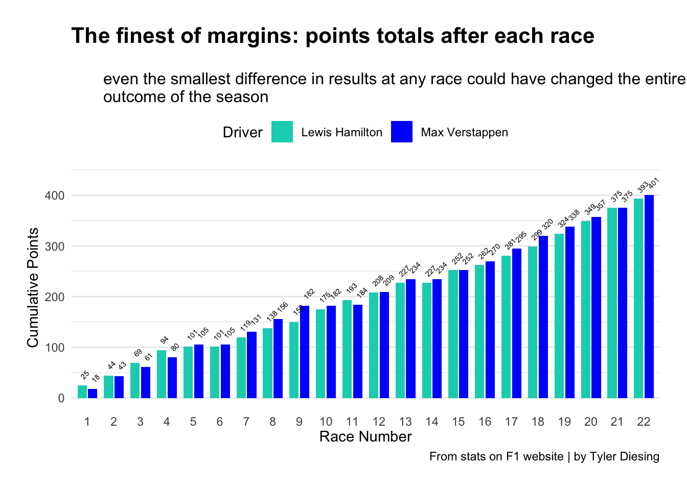
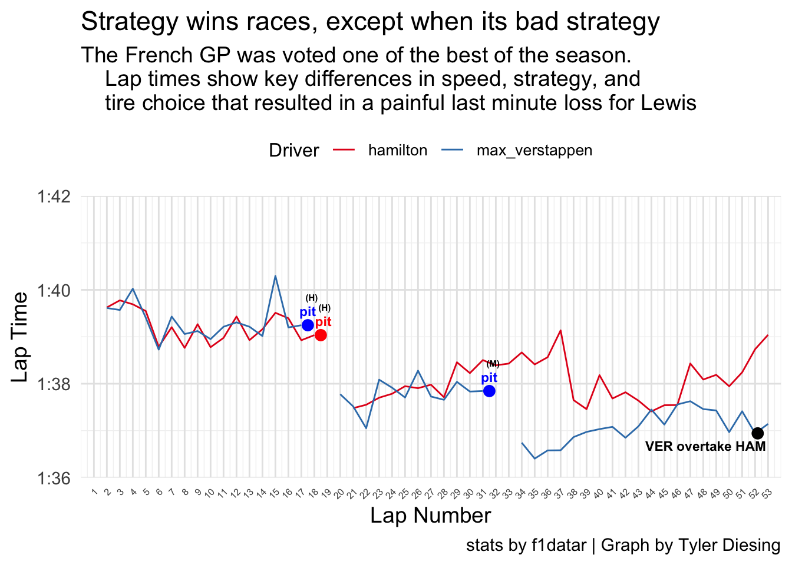
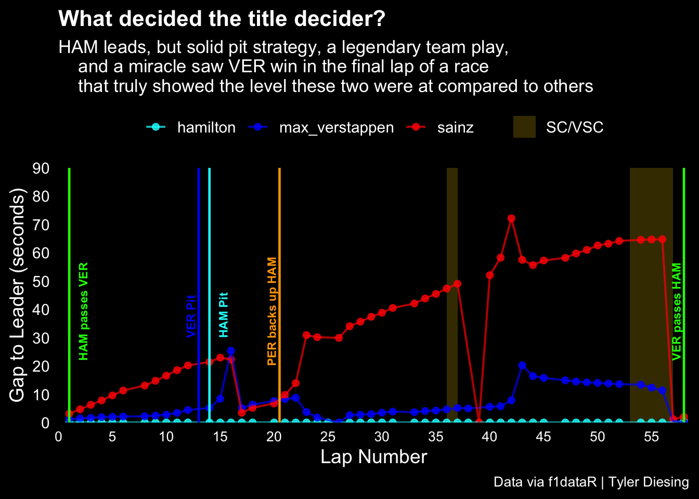

What does one of the greatest title rivalries in F1 history look like through the data?
Formula 1
F1
racing
motorsport
Author
Tyler Diesing
Published
Invalid Date
The 2021 Formula 1 season will undoubtedly go down as one of the best rivalry seasons of all time in any sport. Every race, every lap, every twist and turn of the season, Max Verstappen and Lewis Hamilton exchanged blows one way or another all the way up until the final race in Abu Dhabi where they both arrived on equal points. So, in a title fight that was tighter than any corner of the Monaco Street circuit, how did these two gladiators fare against each other throughout the season? Where did they gain on eachother? Where did they lose out? What could have been different? And how did these two manage to stay in another league compared to the rest of the grid?
Code
library(f1dataR)
Loading required package: reticulate
Code
library(dplyr)
Attaching package: 'dplyr'
The following objects are masked from 'package:stats':
filter, lag
The following objects are masked from 'package:base':
intersect, setdiff, setequal, union
Code
library(ggplot2)
For this analysis I mainly used data from the “f1datar” library, as well as a spreadsheet I made for points totals using stats I got from the official F1 results page on their website.
7x World Champion Lewis Hamilton VS Max Verstappen hunting for his first. Mercedes coming off of winning 7 constructors titles in a row VS Redbull looking for their first since 2013. Unstoppable force VS immovable object.
You couldn’t have asked for a closer matchup, but just how close was it? lets put it into perspective…
Code
library(ggplot2)library(dplyr)library(tidyr)race_points <-data.frame(Race =1:22,Verstappen =c(18,25,18,19,25,0,26,25,26,0,2,25,25,0,18,18,25,25,18,19,18,26),Hamilton =c(25,19,25,25,7,0,18,19,12,25,18,15,19,0,25,10,19,18,25,25,26,18)) %>%mutate(Verstappen_Cumulative =cumsum(Verstappen),Hamilton_Cumulative =cumsum(Hamilton) )plot_data <- race_points %>%pivot_longer(cols =c(Verstappen_Cumulative, Hamilton_Cumulative),names_to ="Driver", values_to ="Points") %>%group_by(Driver) %>%mutate(LabelPos = Points +15)ggplot(plot_data, aes(x =factor(Race), y = Points, fill = Driver)) +geom_bar(stat ="identity", position =position_dodge(width =0.8), width =0.7) +geom_text(aes(y = LabelPos, label = Points), angle =45, hjust =0, vjust =0.5,size =1.9, color ="black",position =position_dodge(width =0.8)) +# Only position_dodge herescale_x_discrete(breaks =1:22) +scale_fill_manual(values =c("Verstappen_Cumulative"="blue", "Hamilton_Cumulative"="#00D2BE"),labels =c("Lewis Hamilton", "Max Verstappen")) +labs(title ="The finest of margins: points totals after each race",subtitle =" even the smallest difference in results at any race could have changed the entire outcome of the season",caption ="From stats on F1 website | by Tyler Diesing",x ="Race Number",y ="Cumulative Points") +theme_minimal() +theme(axis.text.x =element_text(angle =0, vjust =0.5),panel.grid.major.x =element_blank(),legend.position ="top",plot.margin =margin(20, 20, 20, 20),plot.title =element_text(size =16, face ="bold"), plot.subtitle =element_text(size =12) ) +expand_limits(y =max(plot_data$LabelPos) +20)

This is every race of the 2021 season through the lens of how many points Hamilton and Verstappen had accumulated after each round, which shows a couple key moments throughout the season. The first thing you should know is how much each finishing position is worth in points. Only the top ten earn points with A 1st place finish being 25 points in the bag, 2nd place = 18 points, 3rd = 15 points, and 4th = 12 points with the rest of the positions decreasing by 2 points until 10th place which is worth 1.
Safe to say, Max and Lewis occupied the podium a lot, in fact, the first five races were won by either one of them. This brings us to round 6 in Azerbaijan, our first truly pivotal moment. Verstappen suffered a tire blowout on the main straight, sending his RedBull bouncing off the barriers and taking away an opportunity to score points. Lewis, who was now leading the race, now had a perfect opportunity to put a major gap between himself and Max in the standings, except he didn’t, because he didn’t collect a single point that day because he locked his brakes on the restart, allowing every driver behind him to slip by.
Neither driver got points that day, and you’ll notice the same thing happened during round 14 in Italy. In spectacular fashion, Lewis was coming out of the pits as Max was coming down the main straight right behind him. The two cars went side by side into Monzas notoriously tight turn 1 and inevitably Verstappen’s RedBull ended up sitting atop Hamilton’s Mercedes in the gravel. Another 0-0 for our champions.
These two races are a lot to think about, but especially when you also look at how the lead swung between them throughout the season. Lewis looked set to take off with the title after round 4, but a brutal round 5 in Monaco not only brought Max back into the fight, it propelled him to heights like round 9 where suddenly it was looking like he might run away with the championship. From there on you can see the two were practically wheel to wheel every race until somehow they arrived at the grand finale in Abu Dhabi with equal points.
The races themselves were thrillers, but this chart shows just how absurdly close Max and Lewis were for the whole season. Beyond that, it also shows what I think Lewis Hamilton’s nightmares must look like after ultimately losing that final race. All it would’ve taken was for him to finish just one of those two zero point races for everything to be different.
Slightly lighter on the brakes into turn one at Azerbaijan and Lewis Hamilton would be a record breaking 8x world champion.
Let’s zoom in and take a look at some individual races, starting with the French Grand Prix at Circuit Paul Ricard.
This is a line chart showing each individual lap time throughout the whole race along with tire/pitstop strategy. Strategists for the teams spend days staring at charts like this in an effort to figure out what kind of strategy will work best for which tires, tracks, weather, elevations, the list goes on.
Code
library(ggplot2)library(dplyr)library(tidyr)laps_data <-load_laps(season =2021, round =7)plot_data <- laps_data %>%filter(driver_id %in%c("max_verstappen", "hamilton"))full_lap_sequence <-seq(1, max(plot_data$lap))plot_data_complete <- plot_data %>%complete(driver_id, lap = full_lap_sequence, fill =list(time_sec =NA))plot_data_complete <- plot_data_complete %>%mutate(time_sec =case_when( driver_id =="max_verstappen"& lap %in%c(19, 33) ~NA_real_, driver_id =="hamilton"& lap ==20~NA_real_,TRUE~ time_sec ))ggplot(plot_data_complete, aes(x = lap, y = time_sec, color = driver_id)) +geom_line(size =0.5) +scale_x_continuous(breaks =seq(1, max(plot_data_complete$lap), by =1),limits =c(0, max(plot_data_complete$lap) +1),expand =c(0, 0) ) +scale_y_continuous(labels =function(x) paste0(floor(x /60), ":", formatC(x %%60, width =2, flag ="0")),limits =c(96, 102),breaks =seq(96, 102, by =2),expand =c(0, 0) ) +scale_color_brewer(palette ="Set1") +labs(title ="Strategy wins races, except when its bad strategy",subtitle ="The French GP was voted one of the best of the season. Lap times show key differences in speed, strategy, and tire choice that resulted in a painful last minute loss for Lewis",caption ="stats by f1datar | Graph by Tyler Diesing",x ="Lap Number",y ="Lap Time",color ="Driver" ) +theme_minimal(base_size =14) +theme(panel.grid.major =element_line(color ="gray90", size =0.5), panel.grid.minor =element_line(color ="gray95", size =0.25),legend.position ="top", axis.text.x =element_text(size =6, angle =45, hjust =1), legend.title =element_text(size =12), legend.text =element_text(size =10) ) +geom_point(data = plot_data_complete %>%filter(driver_id =="max_verstappen", lap %in%c(17, 31)),aes(x = lap +0.5, y = time_sec), color ="blue", size =3 ) +geom_text(data = plot_data_complete %>%filter(driver_id =="max_verstappen", lap %in%c(17, 31)) %>%filter(!is.na(time_sec)),aes(x = lap +0.5, label ="pit"), vjust =-1, size =3, fontface ="bold", color ="blue" ) +geom_point(data = plot_data_complete %>%filter(driver_id =="hamilton", lap ==18),aes(x = lap +0.5, y = time_sec), color ="red", size =3 ) +geom_text(data = plot_data_complete %>%filter(driver_id =="hamilton", lap ==18),aes(x = lap +0.5, label ="pit"), vjust =-1, size =3, nudge_x =0.2, fontface ="bold", color ="red" ) +geom_point(data = plot_data_complete %>%filter(driver_id =="max_verstappen", lap %in%c(19, 33)),aes(x = lap +0.5, y = time_sec), color ="blue", size =3, alpha =0 ) +geom_point(data = plot_data_complete %>%filter(driver_id =="hamilton", lap ==20),aes(x = lap +0.5, y = time_sec), color ="red", size =3, alpha =0 ) +geom_point(data = plot_data_complete %>%filter(driver_id =="max_verstappen", lap ==52),aes(x = lap +0.2, y = time_sec), color ="black", size =3 ) +geom_text(data = plot_data_complete %>%filter(driver_id =="max_verstappen", lap ==52),aes(x = lap +0.2, label ="VER overtake HAM"), vjust =1.8, nudge_x =-4, size =3, fontface ="bold", color ="black" ) +geom_text(aes(x = lap +0.5, y = time_sec, label =case_when( driver_id =="max_verstappen"& lap ==17~"(H)", driver_id =="max_verstappen"& lap ==31~"(M)", driver_id =="hamilton"& lap ==18~"(H)",TRUE~"" )),vjust =-3.9, size =2, fontface ="bold",nudge_x =0.3,inherit.aes =FALSE )
Warning: Using `size` aesthetic for lines was deprecated in ggplot2 3.4.0.
ℹ Please use `linewidth` instead.
Warning: The `size` argument of `element_line()` is deprecated as of ggplot2 3.4.0.
ℹ Please use the `linewidth` argument instead.
Warning: Removed 2 rows containing missing values or values outside the scale range
(`geom_line()`).
Warning: Removed 2 rows containing missing values or values outside the scale range
(`geom_point()`).
Warning: Removed 1 row containing missing values or values outside the scale range
(`geom_point()`).
Warning: Removed 8 rows containing missing values or values outside the scale range
(`geom_text()`).

Most teams had come to the conclusion that starting on medium tires and running a single pitstop to change to hard tires was the fastest route as you would only need to stop once and the hards would be able to last the whole race after the stop. Not RedBull.
Max started on mediums like Lewis and trailed him until lap 18 where you can see he pits for Hards. This caught Hamilton off guard, as he was planning on a 1-stop strategy, which meant he should be trying to push those mediums as far as they can go to make sure the hards can make it to the end, but he also did not want Max to come out with fresh rubber and pass him as he gradually got slower before pitting for new tires, a move racing strategists call “the undercut”.
They come back out onto the track on the hards and Lewis covers the undercut to keep first place, but look at Max’s times. He’s consistently setting faster laps on the same tire which means he is pushing the tire harder than Lewis, not something you’d do if you wanted to nurse a hard tire to the end after an early pit… This is likely where the Mercedes strategists realized that Max didn’t plan on running that tire to the end, he was just trying to push Lewis into killing his own rubber.
You see Lewis ease up on the lap times and sure enough Verstappen gets the call to box for the medium tire. Showtime. Max comes out of the pits with softer, fresher rubber than Lewis and with 22 laps to go, the timing screens light up.
You see Max suddenly setting 1:36’s as Lewis tries to go as fast as possible without ripping the tires to bits. Strategists on both ends of the pits began to worry as Max grew ever closer until the penultimate lap when Verstappen, with more confidence in his tires into turn 8, slipped into the lead to win.
As 2nd Mercedes driver, Valtteri Bottas, said on the radio as Max sailed past him, “Why the **** did nobody listen to me when I said this would be a two-stop!”
Every race of the season was a stunning example of what happens when you take two athletes at the top of their game and have them push eachother and their machines to the absolute limit. Hamilton put in some of the best laps of his career in races like Brazil and his home race in Great Britain. Verstappen put up equally incredible numbers in the U.S. and at RedBulls home in Austria.
But there can only be one, and what better way to decide a championship than on equal points and plenty of controversy! That being said, lets take a look at this dot plot chronicling the 2021 Abu Dhabi Grand Prix.
Code
library(f1dataR)library(dplyr)library(tidyr)library(ggplot2)laps <-load_laps(season =2021, round =22)drivers <-c("max_verstappen", "hamilton", "sainz")lap_times <- laps %>%filter(driver_id %in% drivers) %>%select(driver_id, lap, time_sec) %>%arrange(driver_id, lap)lap_times <- lap_times %>%group_by(driver_id) %>%mutate(cum_time =cumsum(time_sec)) %>%ungroup()leader_gaps <- lap_times %>%group_by(lap) %>%mutate(leader_time =min(cum_time, na.rm =TRUE)) %>%ungroup() %>%mutate(gap_to_leader = cum_time - leader_time)manual_points <-data.frame(driver_id =c("hamilton", "max_verstappen", "sainz", "hamilton", "max_verstappen", "sainz"),lap =c(57, 57, 57, 58, 58, 58),gap_to_leader =c(0, 0.5, 1.2, 0.5, 0, 2.0) )leader_gaps_fixed <- leader_gaps %>%filter(!(lap %in%c(57, 58) & driver_id %in% drivers)) %>%bind_rows(manual_points)gap_limit_fixed <-ceiling(max(leader_gaps_fixed$gap_to_leader, na.rm =TRUE) /10) *10event_lines <-data.frame(lap =c(13, 14, 20.5, 1, 58),label =c("VER Pit", "HAM Pit", "PER backs up HAM", "HAM passes VER", "VER passes HAM"),color =c("blue", "cyan", "orange", "green", "green"),linetype ="solid",y_position =c(30, 30, 20, 22, 22),size =c(3, 3, 3, 3, 3),x_position =c(NA, 16, NA, 3, 58))sc_vsc_periods <-data.frame(xmin =c(36, 53),xmax =c(37, 57),label ="SC/VSC")ggplot(leader_gaps_fixed, aes(x = lap, y = gap_to_leader, color = driver_id)) +geom_rect(data = sc_vsc_periods,aes(xmin = xmin, xmax = xmax, ymin =0, ymax = gap_limit_fixed, fill = label),inherit.aes =FALSE,alpha =0.2) +geom_point(size =2, alpha =0.8) +geom_line(size =0.7, alpha =0.7) +geom_vline(data = event_lines, aes(xintercept = lap),linetype = event_lines$linetype,color = event_lines$color,linewidth =0.8) +geom_text(data = event_lines,aes(x =ifelse(!is.na(x_position), x_position, lap),y = y_position,label = label),inherit.aes =FALSE,angle =90,vjust =-0.4,hjust =0,size = event_lines$size,color = event_lines$color,fontface ="bold") +scale_x_continuous(breaks =seq(0, 58, by =5),limits =c(0, 58.5),expand =c(0, 0) ) +scale_y_continuous(breaks =seq(0, gap_limit_fixed, by =10),limits =c(0, gap_limit_fixed),expand =c(0, 0) ) +scale_color_manual(values =c("max_verstappen"="blue","hamilton"="cyan","sainz"="red" )) +scale_fill_manual(values =c("SC/VSC"="gold"),guide =guide_legend(title =NULL, override.aes =list(alpha =0.3)) ) +guides(color =guide_legend(order =1),fill =guide_legend(order =2) ) +labs(title ="What decided the title decider?",subtitle ="HAM leads, but solid pit strategy, a legendary team play, and a miracle saw VER win in the final lap of a race that truly showed the level these two were at compared to others",caption ="Data via f1dataR | Tyler Diesing",x ="Lap Number",y ="Gap to Leader (seconds)",color ="Driver" ) +theme_minimal(base_size =14) +theme(legend.position ="top",axis.text.x =element_text(size =10, color ="white"),axis.text.y =element_text(color ="white"),axis.title =element_text(color ="white"),plot.title =element_text(color ="white", face ="bold", size =16),plot.subtitle =element_text(color ="white", size =13),plot.caption =element_text(color ="white", size =10),panel.grid.minor =element_blank(),panel.grid.major =element_blank(),plot.background =element_rect(fill ="black", color =NA),panel.background =element_rect(fill ="black", color =NA),legend.background =element_rect(fill ="black"),legend.key =element_rect(fill ="black"),legend.text =element_text(color ="white"),legend.title =element_blank() )
Warning: Removed 24 rows containing missing values or values outside the scale range
(`geom_point()`).
Warning: Removed 24 rows containing missing values or values outside the scale range
(`geom_line()`).

There’s a couple interesting things to see in this data. The dots show the gap (in seconds) to the lead car, which after a sensational lap 1 overtake, was Lewis for most of the time. I also included Ferrari driver Carlos Sainz as he was the best of the rest in third place, but also because when you add another driver to this chart it shows just how “in a league of their own” Max and Lewis really were.
The race starts, Hamilton jumps Verstappen at the start, and its cat and mouse from here on out as the two instantly leave the rest of the grid trailing behind. Then comes the pit stops. Max came in on lap 13 and Lewis came in a lap later to cover the undercut. Both leaders pitting meant that the lead now belonged to Verstappen’s teammate, Sergio Perez, who was only given one order as Hamilton grew closer in his mirrors,
“Back him up.”
You can see Max losing a bit of pace to Lewis during laps 15-20, but then Sergio comes in and puts up a grizzly defense for 2 laps. That’s when you see Verstappen’s dot plot catch right up to Lewis at the front.
Lewis and Max run 1-2 for pretty much the rest of the race, pushing each other so hard that Carlos and the rest of the grid are long behind them. The fight is still on, but lap by lap you see Max fade away and start to run out of options and laps… until a crashing Nicholas Latifi brings out the safety car. The SC bunches all of the drivers up, hence why Sainz suddenly makes up a 70 second gap to the pack. Verstappen takes the opportunity to make a pitstop under the safety car, but Hamilton stays out, fearing he may lose track position to max if he pits which would lose him the race if the safety car kept circling until the end of the race. Max comes out with fresher rubber, but he’s stuck behind a bunch of the cars that he and Lewis lapped during their scramble.
So, either the race ends under SC and Hamilton wins or there is 1 last racing lap, but Max wouldn’t be able to fight through all the lapped cars in time to even put on a spectacle with Lewis. So surely Hamilton wins that coveted 8th title, right?
Well that’s where it gets a little controversial. Rules state that either all lapped cars get to pass the leader to catch back up or none of them get to pass in order to not interrupt ongoing fights. In a shocking turn, however, race control only allowed the cars between Max and Lewis to catch back up, which now put Max and his brand new tires right behind Lewis on his old tires with just enough time for one racing lap.
In what was probably the craziest single lap of racing I had ever seen, Verstappen eventually made the overtake to claim his maiden title, albeit slightly clouded by controversy.
The point of all these charts and all of this data isn’t just to show off the neat ways F1 teams take in data and how it is weaponized into a competitive advantage, or even just to creatively display a fascinating title fight. It also shows just how incredible these two drivers were when all the chips were down. Almost every race was dominated by Verstappen or Hamilton by an impressive margin, and at the end of the season the next best driver was Hamilton’s teammate who was about 161 points behind the title challengers.
There’s a million different ways to frame the countless data points in F1, but you may be hard pressed to find another pair of drivers that warrants that much analysis.